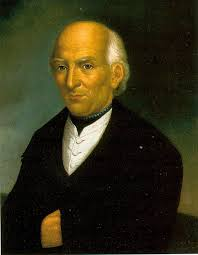
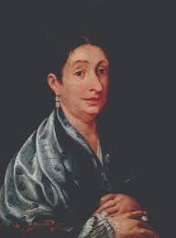
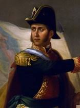
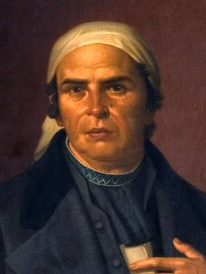
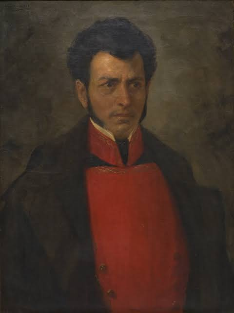
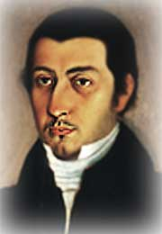

Encabezó el Grito de Dolores el 16 de septiembre de 1810 para iniciar la Guerra de Independencia.

Avisó a los rebeldes que la Conspiración de Querétaro había sido descubierta el 15 de septiembre.

Lideró y organizó tácticamente las primeras tropas del ejército insurgente en 1810.

Dirigió la segunda etapa insurgente y redactó los Sentimientos de la Nación.

Sostuvo la resistencia armada en el sur y pactó la alianza final para libertar al país.

Transportó el aviso urgente de la Corregidora hasta Dolores para arrancar el levantamiento.

Comandó al Ejército Trigarante e hizo la entrada triunfal a la capital el 27 de septiembre de 1821.
Martínez Monárrez Alondra Sofía - 5°j - Programación - 24308051280867
Construye Aplicaciones Web